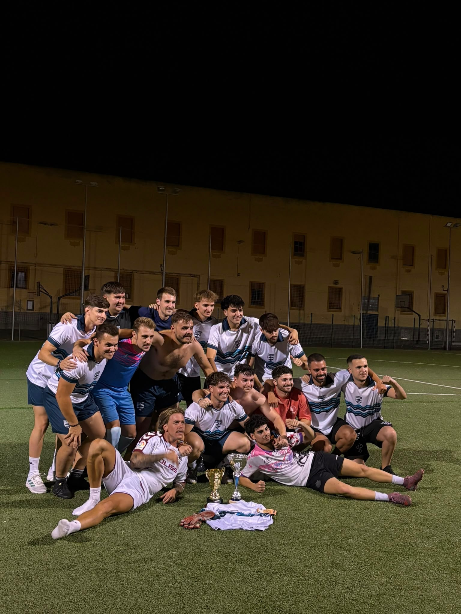

Los más pedidos
Productos destacados
Las prendas que más se llevan nuestros aficionados. Elige la tuya y añádela al carrito.
Camiseta Local
49,99 €
Camiseta Visitante
49,99 €
Chaqueta
59,99 €Momentos de Bacalaos FC
